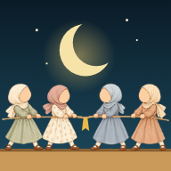

ٱلسَّلَامُ عَلَيْكُمْ
Dos equipos, una pantalla.
Cada equipo puede cambiar su idioma durante la partida.
0/10
Escanea el código con la cámara para abrir el juego.
¿Algo no funciona, encontraste un error en una pregunta o tienes una idea? Cuéntanoslo.
Así caben en la pantalla las preguntas de los dos equipos y las niñas se ven grandes.
Tendrás su icono en la pantalla de inicio y funcionará sin internet.
مَا شَاءَ ٱللَّٰهُ
¡MashaAllah! La victoria es para
00:00